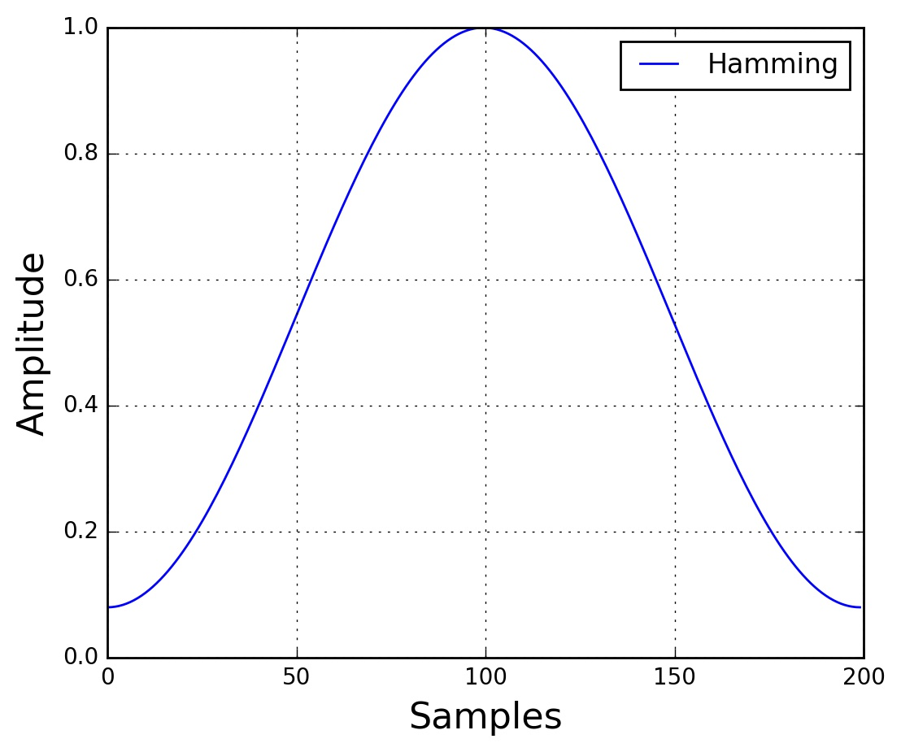
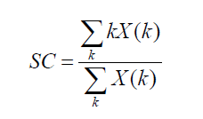
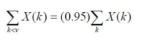

Kartik Vijayvergiya | 150108017
Sarvesh Raj | 150108033
Sasank Gurajapu | 150108034
In our project, we aim to classify music based on its genre using feature extraction followed by machine learning classifiers. Our main focus is to study and analyse how different categories of audio signals consist of varying information in both the time and the frequency domain and thus exploit them to build features for accurate classification.
We will be using a standard dataset and extract various features from the given soundtrack. The outcomes of these features are then feeded to various machine learning based classifiers, which are thereafter trained and are used to predict the possible outcomes.
Music Genre Classification is an interesting and relevant problem that people have tried tackling with their own unique approach. One prominent research which has set a benchmark for this field of research was done by G. Tzanetakis and P. Cook in IEEE Transactions on Audio and Speech Processing 2002.[1] It used spectral and also rhythmic features for training classifiers and further prediction. The employed feature set has become of public use, as part of the MARSYAS framework (Music Analysis, Retrieval and SYnthesis for Audio Signals), and it has been widely used for music genre recognition [3,9,11]. Other characteristics such as Inter-Onset Interval Histogram Coefficients, Rhythm Patterns and its derivatives Statistical Spectrum Descriptors, and Rhythm Histograms have been proposed in the literature recently. Several basic spectral features are used in common by several papers around the globe.[2]. These includes usage of spectrogram to calculate features like Roll-Off, Kurtosis etc. Another important feature used is the Mel-Frequency Cepstral Co-Efficients. [3] Some latest features used for above purposes include usage of Local Binary Pattern features on spectrum. There are also proposals for using Octave based spectral contrast & Normalised Audio Spectral Envelope on MPEG-7. After extracting various features, we are left with using Machine learning classifiers. In addition to traditional K-Means, Spherical clustering and Bag-Of-Words based classification (for spectral analysis[5]), we also witnessed improved rates with usage of Hidden Markov models or a culmination of several traditional models. [6]
Music Genre Classification is an interesting and relevant problem that people have tried tackling with their own unique approach. Our proposed approach is the following:
We have used the GTZAN dataset from the MARYSAS website. It contains 10 music genres, each genre has 100 audio clips in .au format. Since our project mainly focuses on the feature extraction part, we have decided to perform the experiment over 4 main genres, ie - blues, classical, jazz, rock, metal. Each audio clips has a length 30 seconds, are 22050 Hz Mono 16-bit files. The dataset incorporates samples from variety of sources like CDs, radios, microphone recordings etc.
The preprocessing part involved converting the audio from .au format to .wav format to make it compatible to python's wavread module for reading audio files. The free and open source software FFmpeg was used to achieve this conversion. The next step was segmenting the audio files into smaller frames to reduce computation time and power.
After reading the audio wav files, we need to split the signal into short-time frames. The rationale behind this step is that frequencies in a signal change over time, so in most cases it doesn’t make sense to do the Fourier transform across the entire signal in that we would loose the frequency contours of the signal over time. To avoid that, we can safely assume that frequencies in a signal are stationary over a very short period of time. Therefore, by doing a Fourier transform over this short-time frame, we can obtain a good approximation of the frequency contours of the signal by concatenating adjacent frames. Typical frame sizes in speech processing range from 20 ms to 40 ms with 50% (+/-10%) overlap between consecutive frames. The settings we used are 25 ms for the frame size, frame_size = 0.025 and a 10 ms overlap.
After slicing the signal into frames, we apply a window function such as the Hamming window to each frame. A Hamming window has the following form: w[n]=0.54−0.46cos(2πnN−1)  where, 0≤n≤N−1, N is the window length. Plotting the previous equation yields the following plot: There are several reasons why we need to apply a window function to the frames, notably to counteract the assumption made by the FFT that the data is infinite and to reduce spectral leakage.
We can now do an N-point FFT on each frame to calculate the frequency spectrum, which is also called Short-Time Fourier-Transform (STFT), where N is typically 256 or 512, NFFT = 512; and then compute the power spectrum (periodogram) using the following equation: P=|FFT(xi)|2/N where, xi is the ith frame of signal x.
It describes where the "centre of mass" for sound is. It essentially is the weighted mean of the frequencies present in the sound. Consider two songs, one from blues and one from metal. A blues song is generally consistent throughout it length while a metal song usually has more frequencies accumulated towards the end part. So spectral centroid for blues song will lie somewhere near the middle of its spectrum while that for a metal song would usually be towards its end.
This feature describes the center of frequency at which most of the power in the signal (at the time frame examined) is found. Music signals have high frequency noise and percussive sounds that result in a high spectral mean. On the other hand, in speech signals the pitch of the audio signal stays in a more narrow range of low values. As a result, music has a higher spectral centroid than speech. The spectral centroid for a frame occurring at time t is computed as follows: where k is an index corresponding to a frequency and X(k) is the power of the signal at the corresponding frequency band. 
This feature is the value of the frequency that 95% of the power of the signal resides under. As mentioned before, the power in music is concentrated in the higher frequencies; however, speech has a range of low frequency power. The mathematical expression for finding this value of frequency is as follows [65, 109]:  where X(k) is the DFT of x(t), the left hand side of the above equation is the sum of the power under the frequency value V, and the right hand side of the equation is 95% of the total signal power of the time frame.